赞助商

Copyright Wehaha.com Rights Reserved. 闽ICP备12016244号 |
Powered by DollarFans.com最近爆款新闻是鸭脖市变身泽国：
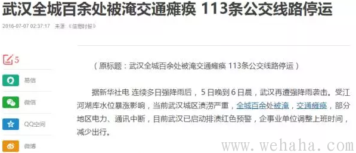
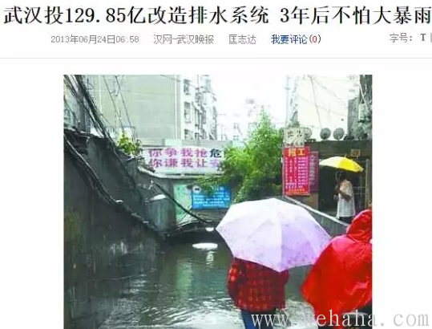
歌厅市的橘子洲变身一颗赛艇：
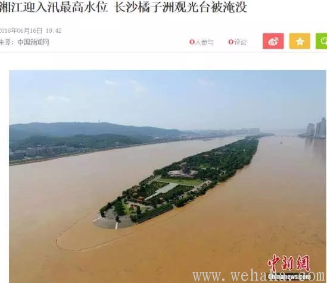
连最土豪的别墅都泡了汤（据武汉朋友讲这里的别墅动辄上亿一栋）：
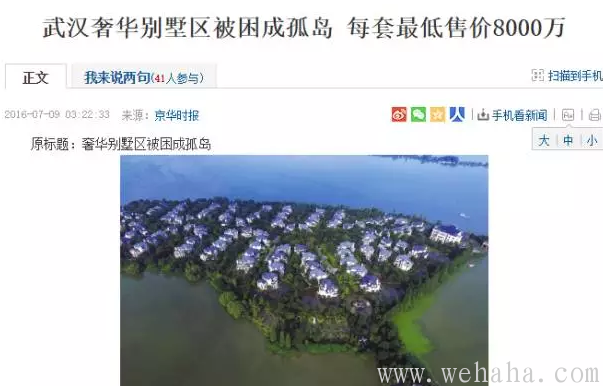
另外还有就是黄金暴涨，市场上各种人都在忽悠大家买黄金。
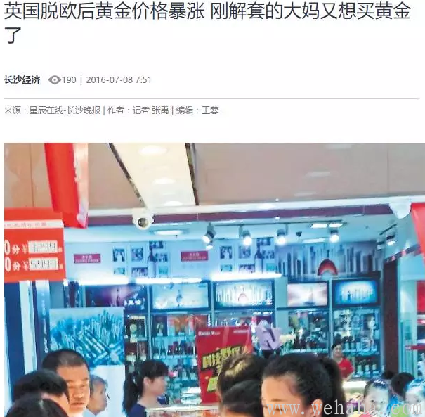
首先，在我看来，黄金暴涨是很正常的，毕竟现在国内经济承压，又出了几只黑天鹅。现在是进入了一个敏感期。本就经济下行不说，还动辄水灾雪上加霜。这样情况下，大家避险情绪总会增加。毕竟地球上太危险了，而我们又没法回到火星上去。记得财迷5月7日在《老爷走位依然风骚，黄金市场迎来机遇？》一文中专门做了一个SWOT分析。财迷当时就说了，虽然长久看美国经济好转会打压黄金价格。但是现在黄金跌到这样低位，也确实给了大家机会。而且大家中短期进入，机会还是有的。起码稳健一点，适当买入点纸黄金，对冲下通胀损失，还是有可能的。财迷当时自己也决定建个小仓，并且决定建群直播建仓，同时为大家不时地提供信息。有那么几十个同道者进了群。然而不少人还是跳出来说这个不靠谱。拜托，这世界上哪有百分百靠谱的事，财迷也不可能跳大神告诉你一定会涨。财迷只是经过详细分析以为这个靠谱概率较大罢了。而且财迷也只是请大家中短期投资，又没让您长期持有。很多人天天在群里吵着要财迷给机会，现在机会在面前，结果还是有人没把握住。这真是怪不了财迷了。
转眼间两个月过去了，后来的情况大家都看到了：谁也没想到英国脱欧，美国经济数据也不好，黄金暴涨。财迷反正是赚了一点，对冲了一下通胀风险。群里其他高手，他们也都多少赚了一点，具体多少财迷不方便问，但至少直到现在，群里还没人向财迷抱怨过不该进入黄金市场。倒是有人后悔没进去。
回头来讲南方水患。在我看来，武汉最贵豪宅泡水的案例，生动的解释了神州现状：灾难的放大器已经生成，一旦遇到天灾，身处其中的人都会成为输家，无人幸免。以后这种问题还会越来越多，希望大家能及早准备。
解毒如下：
第一，庞然大物必然会导致低效，这会放大水灾的负面后果。庞然大物船大难掉头，反应缓慢，而且内部冗员很容易导致低效。比如在zhuanzhi大帝国内的治水效率并不比自治地区更高，即使当时是所谓的治世。这个多谢秦晖先生，功底扎实，为我们提供了大量证据：“古代的鸿沟、邗沟、芍陂、都江堰、郑国渠、漳河渠等著名水利工程都完成于春秋战国诸侯时代，秦汉统一后并无更好的成绩。综观历史，我国华中、华南、四川的农业及水利在三国、南朝、晚唐及明末、清末均取得长足发展，而当时的中央朝廷不是已经崩溃，就是正在滑坡。近年来中法两国多名学者组成的一个团队对晋陕水利社会史的研究也表明，当地水利事业在传统上主要是民间社会、而不是官府兴办的。更有甚者：人们发现所谓“强盛王朝”往往反而是水利衰败时期。以关中平原论，秦统一前建成的郑国渠系灌溉约400万亩，但统一后2000多年里这个成就再未达到。汉代白渠灌区就不断萎缩，一直骤减至4万亩。而号称盛世的唐代，最高也才恢复到约100万亩，唐宋之际又衰减至20万亩。倒是北宋这个传统上认为并不“强大”的王朝修建了丰利渠系，灌区曾达200万亩，为郑国渠之后的最高。但不久又趋衰败，元帝国据说是我国历史上“最强”，版图也最大，但关中灌区却缩减为80－90万亩，不及北宋盛时之半。而且很快又进一步衰败，明代是号称“治隆唐宋”的又一个强大王朝，但关中的广惠渠灌区，最盛时仅恢复到80万亩，到晚明更衰减至7.5万亩。“我大清”如今在电视上简直是有君皆圣，天纵英明，然而在水利方面即使最盛期也无所作为，关中的引泾灌溉一蹶不振，到所谓“康乾盛世”的1737年后完全中断，龙洞渠改引泾为引泉，灌溉仅3万亩。直到民国李仪祉修建泾惠渠，才重新恢复引泾，灌田66万亩。耐人寻味的是：这一进展却是在杨虎城主陕、南京政府无法控制的半割据状态下取得的。”（来源，秦晖《“治水社会论”批判》http://www.haijiaoshi.com/archives/259）
我们现在虽然或许难和历史上的最强盛王朝在世界中的地位相比，但是我们都没法否认我们处于一个较为低效的庞然大物之中（如您需要，财迷可以给您提供一堆证据）。地方自治权力是很低下的。那么，我们很可能推论出实际上现在庞然大物对突发事件管理的应对很难说很好，会出事的概率有可能较大。
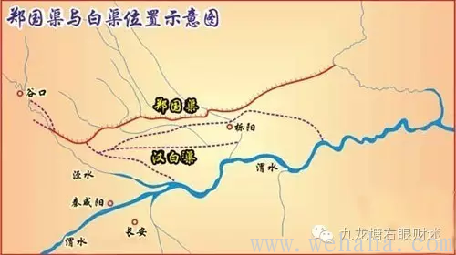
下图为郑国渠
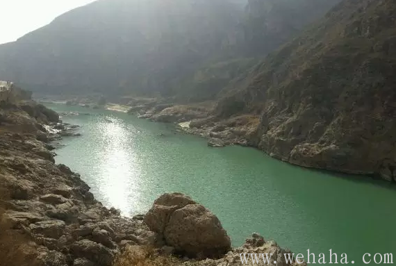
第二个理由叫做“后来者诅咒”（CurseToTheLateComer）,这也会放大天灾的负面后果。这是一个叫沃森的已故经济学家的说法。大意为落后国家由于发展较迟，故而有很多东西可以模仿发达国家。模仿有两种形式，一种是模仿制度，另一种是模仿技术和工业化的模式。由于是后发国家，所以可以在没有基础制度的情况下通过技术模仿实现快速发展。这就是说落后国家由于模仿的空间很大，所以可以在没有好的制度的条件下，通过对发达国家技术和管理模式的模仿，取得发达国家必须在一定制度下才能取得的成就。特别是落后国家模仿技术比较容易，模仿制度比较困难，因为要改革制度会触犯一些既得利益，因此落后国家会倾向于技术模仿。但是，落后国家虽然可以在短期内取得非常好的发展，但是会给长期的发展留下许多隐患，甚至长期发展可能失败。这一次，南方水患倒在于其次，最重要的是当初市政/地产工程只是模仿了皮毛，并未充分模仿一些基本制度，导致连最高档小区都会被淹。我们且不和发达国家比，就连自己宋朝时代的水利工程都比不过，因为太急功近利了。红朝这其实就是中了“后来者诅咒”。不信大家看下图：
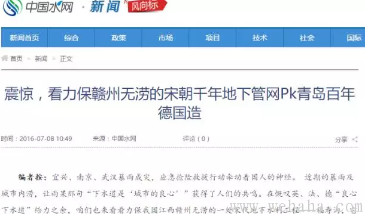
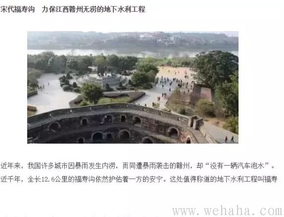
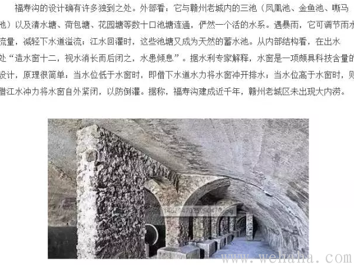
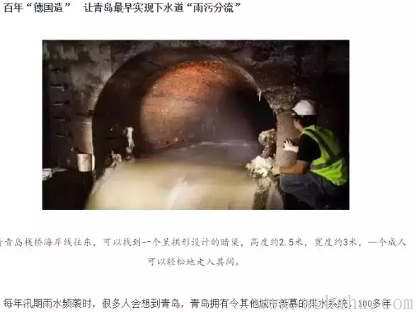
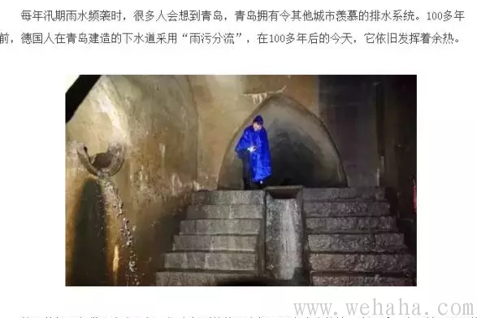
这两个理由已经可以轻松证明在我们中国草民还是需要有备无患了。但没有最糟，只有更糟。还有一件事需要谈到。那就是在庞然大物之内还会培养出既得利益集团，这些利益集团会阻碍生产力发展。对此秦晖先生在研究水利史的时候也有很多论述，并找到了很多证据。财迷不敢专美，在这里摘录如下：
“漕运低效，但是修建、维护（尤其是没完没了耗费很大的维护）运河的代价却极其高昂。而漕运系统的机构、人员与开支也异常庞大。牢不可破的“漕运利益集团”造成的积弊因此不在河政之下。漕运本身的贪污浪费低效高耗，这里就不能细说了，只说其“外部”之弊，大者至少有二：
一是阻碍运输进步。由于漕运效率低，人们一直探索其他方式，早在元代，经海路进行南粮北调的技术就已经成熟，并进行了实践，甚至为了缩短海程、规避风浪，还在山东半岛修建了连通胶州湾和莱州湾的胶莱运河。所以元朝虽以修大运河出名，其实它是以海漕为主的。明初依然如此，那时是我国传统海运的黄金时代，“郑和下西洋”就是依靠这时的技术积累实现的。然而不久明廷就实行“海禁”，漕运全部改河。导致这一转折的原因很多，而其中之一就是海运会妨碍漕运衙门的生财之道，于是遭到种种阻挠为难，使漕粮海运事业中道夭折，河漕官吏得以中饱，而中国的海运也从此衰落。到了晚清，因运河梗阻愈甚，再议海运，仍遭河漕利益集团抵制，从1810至1825年屡议屡阻，1826年终于试行一年，大获成功，海运“不由内地，不归众饱”，省费达三分之二。但如此好事，却因河漕利益集团为难，次年即被叫停。直到1850年代后运河断航，漕运实际已经瘫痪，但河漕衙门一直拖到1904年清亡前夕才被裁撤，而此前这群官僚还在阻碍修建替代漕路的津镇（后为津浦）铁路。
二是因漕害农。那时的“治水潜规则”是农民可以种不成田，官府不能运不成粮。而漕路所经的华北黄淮地区多灾，旱则农漕争水，涝则漕田竞泄。但任何情况下漕运都必须优先。于是历代治河治漕的种种“技术成就”，什么蓄清敌黄、减黄助清、借黄济运、倒塘灌放，目的都在通漕。民田的灌溉与排涝都必须让路。明清时期华北山东缺水，官府把沿运几乎所有泉流河湖都划为官泉、官河、官湖并严加管制，保证涓滴入漕，汇流济运。并规定用水实行“官八民二”，“大流济运，余水灌田”，“灌田者不得与转漕争利”，于是天稍旱无“余水”，农民只好看着庄稼枯死。相反，苏北地势低洼，黄淮交浸，常有洪涝。为保运道，官府常以民田为壑，一遇汛期，即分黄导淮、开闸保漕，使堤下田宅立成泽国，以至里下河地区年年被水，淮扬一线处处遭灾。漕运于朝廷固为“水利”，于百姓却常为“水害”，以至于农民“闹漕”、“哄漕”成为当时严重问题。
。。。。。
漕运中的‘商业成分’原来只是一种变相津贴：明时规定每艘漕船除漕粮外准带“土宜”（土特产）10石，沿途出售，作为运军的补充收入。后来利益驱使，这种夹带的私货越来越多，万历时政策放宽到每船60石，而逾限多带更逐渐泛滥，甚至私货之重超过“正粮”，回空船重（因多带私货）有逾来程。而民间私船给了“好处”也可以混入漕河。运河沿线的“商业繁荣”就这样逐渐浮现。但是这种商业理论上属于类似走私，有权势者雁过拔毛、任意敲诈是少不了的。更重要的是：这样的“繁荣”其实意味着漕政的腐败和混乱。”
（来源《“治水社会论”批判》http://www.haijiaoshi.com/archives/259）
引用完毕，财迷只想说：已经有的，还会再有。已经来的，还会再来。太阳之下，并无新事。往日有漕运集团，如今有水电集团，核电集团。各位想想如今大量的水利工程和核电工程，想想能力以外等于零。你懂的。（这里有删节）
另外一个就是房地产利益集团，新京报已经爆出武汉地产商填湖造田才导致今天出现内涝臭水池的的奇观。连国社都转了的。
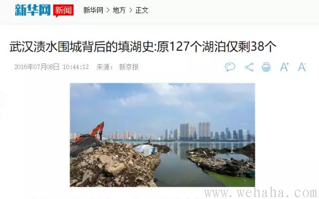
链接在下面，大家可以自己看：
http://news.xinhuanet.com/local/2016-07/08/c_129128537.htm
然而这还不算最糟。还有一个问题是：救灾者很多人没有得到应有的回报。水灾一来，那自然是多难兴邦，哪些农村娃当兵的顶上，英雄辈出。只是可怜你英雄辈出之后，却又被弃之如蔽帚。这和当初上山下乡的城里仔，越战参战的农村娃，积极创业的毕业生们都一个类别：消耗品。所谓鸡汤穷三代，励志毁一生，放这里也挺合适的。但财迷却对此表示喟叹：这样下去，还有多少人愿意热血呢？（此处有删节）
诚然，所谓一方有难、八方支援，确实能够一定程度上缓解某些地区的灾害带来的后果。但是，庞然大物的低效和利益集团出现在支援方面也体现了出来，比如红会，大家都懂的。
天灾不可怕，可怕的是天灾的放大器：庞然大物的低效、后来者诅咒、利益集团和对救灾者的不公放大了水灾的负面后果，增加了灾难发生后造成巨大破坏的概率。或许少部分人确实从庞然大物和利益集团中得到了利益。但是长期看，所有人都会吃亏。天灾是不会分穷人富人，有权没权的。这次甚至连武汉最豪华的别墅群也被水围困，断水断电，这就可以看出大家的岁月静好是多么地不靠谱。即使你身家亿万，买到的豪宅也会泡了汤，何况大部分普通人？这是一个典型的负帕累托效应，而这种负帕累托效应本是可以避免的。所以，大家一起努力来缩小灾难的负面后果，减少灾难发生后造成巨大破坏的概率是必要的。
真诚地希望上位者不要忽视了此事，导致大部分人的长期利益受损。毕竟，即使您是地方长官或者巨富，如果您并没有把家人送出国，您也很可能会难以从被放大的灾难的破坏下幸免。何况积怨太深，一不小心就会择机爆发的。
缩小灾难的负面后果，减少灾难发生后造成巨大破坏的概率，可以从两个层面着手：
宏观层面，大家懂的（此处有删节）。
微观层面，对于我们普通人个人来说，对策如下：
1.这次洪水过后，童鞋们应该醒悟了吧？如果各位有房产买在了地势低洼的地方，或者化工厂旁，或者核电站旁，还是早点系鞋带出手较好。以后要买房的时候也要谨慎。目测需要谨慎的地方有如下：江汉平原有荆江悬河，陕西汉中有核电站选址，四川彭州有方便面留下的化工遗产，深圳东部有一个大亚湾，湖南、江西、江苏有不少化工厂，以及淮河两岸，南京洼地等。这些地方的童鞋们要注意，以后出事概率是相对较大的，原因前面我分析过了，爱信不信。可惜这些地方都是神州土地中最精华部分，尤其是陕西汉中，算得上净土了，还是有人想打主意，财迷只能扼腕。
2.列位看官，尤其是一家之主们，一定要注意了。屯一些备用的东西，比如干粮，净水，药品以及充电器，干电池等等会有好处的。
3.如果可能，列位看官们还是买一点保险为好，保险是现代文明的产物，说穿了就是以小钱撬动大钱，帮您进行风险管理的。中国经济下行，意外会出现很多，买一点保险是靠谱的。财迷自己也买了保险的，这里不会说买哪家公司什么保险，免得大家以为财迷做广告。有想问的可以来打赏下财迷私聊。
4.窃以为各位童鞋还是要和亲友搞好关系，维持住一个信息和互助的网络。中国人之所以讲关系，并不都是为了贪污腐败，公权私用，而是几千年来老祖宗留下的智慧：对抗天灾或者人祸。一般来说，救灾的成熟方式应该是保险+公益组织救援。因为民间公益组织效率高，财务透明。但中国社会里的公益组织发展一向举步维艰，现在很多都奄奄一息了（此处有删节）。在缺乏社会组织保障的情况下，也就只有靠亲友互助才能度过一些难关了。而接下来的时间，中国经济下行概率变大，早点维持住一些关系，会有好处的（以后财迷还会专文论述这个方面）。
2.窃以为还是对救灾兵娃子好一点。他们其实很辛苦的，边啃馒头边救灾，不小心落下残疾，最后还不是得拿着一张光荣纸就返乡（这里不能细讲，你懂的）。财迷知道大家喜欢喷，但个人以为对这些兵娃子，还是应该有几分敬意的。等他们热血冷了，万一有事，还会有谁愿意来救灾呢？
财迷该说的都说了。我们自然不是范文正公，不需要居庙堂而忧其君，处江湖而忧其民。我们只能处江湖，也只能忧己身。但诸君也没必要站在岸上不腰疼，以黄鹤楼上看翻船的心态来看南方水患，尤其是如果您脱不了的话。毕竟我们不幸生活在庞然大物之中，一遇到天灾，其负面后果就会被放大。宏观层面的解决方式，我们没法参与，但起码个人方面，诸君该预防的要预防，该准备的要准备。这次水患，是一个警钟，您不早作准备，万一您家附近出现别的天灾，恐怕您也难以幸免。要知道，人家八千万的豪宅都泡汤了呢。
我们普通人，不能等到最后才挣扎着试图抓住求生的稻草。
========================
以上为正文，下面发个通知：
财迷还是认为贵金属市场还有一点机会，但现在肯定没两月前那个机会大了，中短期还可以玩一玩（注意，还是中短期）。因为财迷以为接下来继续出现一点黑天鹅的可能比较大。财迷自己也会再适当在里面玩一下。如果还有初学者不知道怎么玩，可以进财迷之前建好的贵金属群，财迷会向您直播我是如何建仓的。同时财迷也会给大家分析一些财迷在这方面的心得。
入群好处有三：
第一，如果您是初学者，可以让您了解操作的流程，入门学习。
第二，您可以在群内获得最新的消息。
第三，您可以在群内向财迷和其他高手发问，并及时得到回答。
这个群主要面向初学者，但也非常欢迎高手来分析心得，您进群后，如果大家都觉得您说得好，财迷会给您定向发红包。
当然，进群是需要费用的，费用不高，您打赏38.8元红包就好。财迷之所以这样做，是不希望大家进群后吵吵闹闹，吵闹者会被请出，这样有了成本方便管理。财迷也不愿意给大家添太多负担，所以之前财迷在读者中做了调查（详细见财迷《老爷走位依然风骚，黄金市场似有机会？》一文），大多数读者都认为30-50元可以接受。用这点入群费来作为一个管理成本，财迷想应该不算过分。您在以后要是通过群内信息真的挣到了钱，再酌情打赏财迷即可。您支付入群费后财迷将立即将您拉入群内。
财迷需要提醒您：
One，炒作纸黄金有风险，您可以来观摩，之后的您自己的行为财迷不担负责任。财迷也不会向您推荐任何黄金产品及机构。
Two,观摩中财迷只是操作纸黄金/白银，最多能跑过通胀，和股票相比比较保守，并不能赚到太多。财迷不会用杠杆，但会给大家分享信息，请大家注意。
Three,您入群后请只分享和讨论贵金属相关信息，一旦换了话题，将被立即请出群。这是为了群内的好，请您见谅。
说实话财迷并不在乎这点钱，财迷只是因为自己也会做一做，而且也想认识一些同道高手，还为了方便管理，所以顺便这里说一声，有意者请加chaimi2015，说明来意，财迷会加您进群。


Copyright Wehaha.com Rights Reserved. 闽ICP备12016244号 |
Powered by DollarFans.com
发表评论